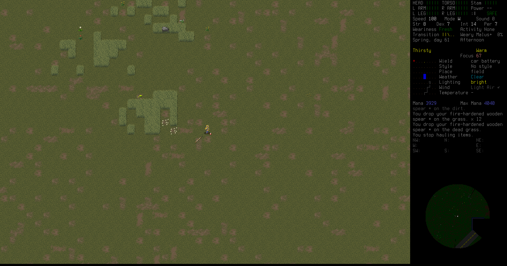
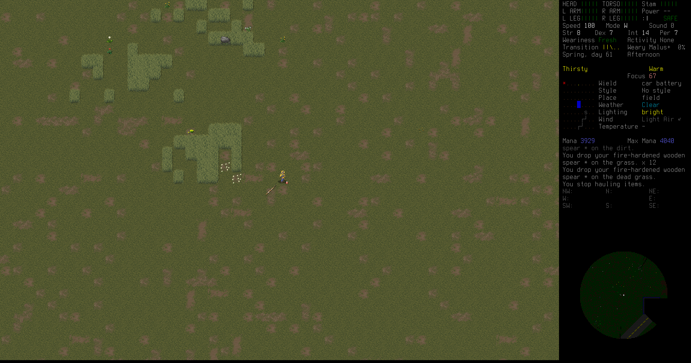

As he walks furtively north, looking over his shoulder to make sure the creature doesn't chase him, he sees it lunge at a frightened chipmunk that scrambles away from the beast's long gaping jaws.
As he walks furtively north, looking over his shoulder to make sure the creature doesn't chase him, he sees it lunge at a frightened chipmunk that scrambles away from the beast's long gaping jaws.
Last we left Raymon, he had scrounged together some meagre gear and a sturdy spear and was about to hike north west toward the refugee center.

Striking out across the field, Raymon headed toward the regional dump near the evac shelter. It wasn't far as the crow flies, though not connected by road anywhere nearby.
This is some form of otherworldly hound. Lean and hungry-looking, its twisted red flesh is stretched tightly across its misshapen, angular frame. Loping grotesquely along, its unusually long neck stretches forward, its skull-like head near the ground as it sniffs out its prey. Its foulness partially veiled by some arcane force, it seems to almost flicker in and out of your perceptions in a fashion that awakens ancient nameless terrors in the back of your mind.
A strange red monster comes into view, hanging just outside the barbed wire fence surrounding the dump. It doesn't seem to notice Raymon, but he's not taking any chances. Taking chances is how he'll die. He goes further north, toward the main entrance.
As he walks furtively north, looking over his shoulder to make sure the creature doesn't chase him, he sees it lunge at a frightened chipmunk that scrambles away from the beast's long gaping jaws.

Raymon spots movement among the dumpsters at the near corner of the dump. A huge fly, so big it might have been a balloon, buzzes lazily over the barbed wire. Behind it are two stumbling figures. One is big and bloated. The other crawls with its forelimbs, its legs mangled beyond belief. They reach for the fly and seem to wave at him across the field. He recoils in horror and moves on toward the entrance.
There's one of the cutting-edge solar cars parked in front of the dump. Raymon gets excited for a moment—most of the panels and the cab are in good shape—but then he sees that the tires are shot. He moves further toward the dump, cautiously. There are huge black rats moving in and out of the mountains of trash, with teeth as big as his hand.
When Raymon gets close enough he sees a big flatbed truck in pretty good condition sitting there in the parking lot of the dump. It's got all its wheels! If he can get it working, he'd feel so much safer.

Raymon walks along the road toward the dump to get at the truck. All the rats put him on edge, high alert.

Getting closer he can see that the dump is filled with zombies. They shamble among the old appliances and bathtubs and stumble over metal piles and old cars. They start to notice him as he walks up to the truck.

Raymon gets to the truck door before the zombies reach the other side. He flings it open and pokes his head inside.
It'd run. The truck would run. It's got gas. He starts frantically searching for keys anywhere in the truck, maybe in the glove box? Maybe in the console? The zombies get closer, and another massive fly casts a long shadow on the ground and buzzes as loud as if it were right next to his ear.

There were no keys in the truck, and he doesn't have time to hotwire it. The zombies are almost knocking on the other side of the truck. Raymon jumps out and runs for the fence. The shambling zombies can't get around the truck quick enough to catch him, and soon he's on the other side of the fence.

The zombies get stuck in the barbed wire, cutting their flesh and clothes in their vain attempt to get at him. Eventually they seem to lose interest.

Raymon gets out of there and walks north along the road, past a swampy area.

A mutant mosquito the size of a small dog, buzzing and fluttering erratically.

Finally a normal sight: fish playing in a pond. Raymon just stands by the pond for a few moments and contemplates what his life has come to. Then he's on his way again

To the north, Raymon sees a little scrap yard jutting off the roadway. Maybe there's something left for him to scavenge.
There's a tow truck in pristine condition sitting in the driveway, and the place looks kept. Raymon goes to the little office building and slowly pushes the door aside.

There's a man behind the counter, sitting with his feet up on a wooden chair, a huge crowbar within arms reach, a rifle holstered on his back. They stare at each other for a few moments of disbelief.


 
